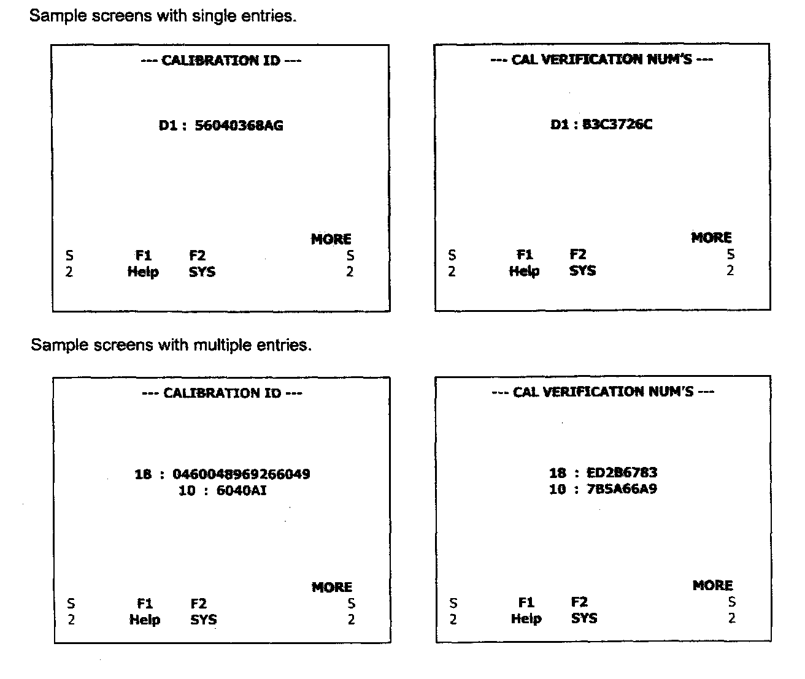

9. Vehicle Information

MODE 9 - Request Vehicle Information
Functional Description - The purpose of this mode is to enable the off-board test device to request vehicle specific information such as the Vehicle Identification Number (VIN), Calibration Identifier (Part Number for Chrysler Group), or Calibration Verification Number (CVN) used in the validation of software integrity. Support for Mode 9 generally applies only to control modules with reprogrammable flash memory. Therefore, some of this information may be required by federal regulations, and other information may be simply reported in a standard format if desired by the vehicle manufacturer. The Calibration Identifier and Calibration Verification Number are intended as a means to verify the contents of the control module memory. These values must "identically match" what was released by the original equipment manufacturer. These values are compared against an off-board reference specification that documents the unique numbers corresponding to each released product (cross-referenced by VIN or part number). This is to protect for any after-market alterations to the control module memory that may affect emissions quality.